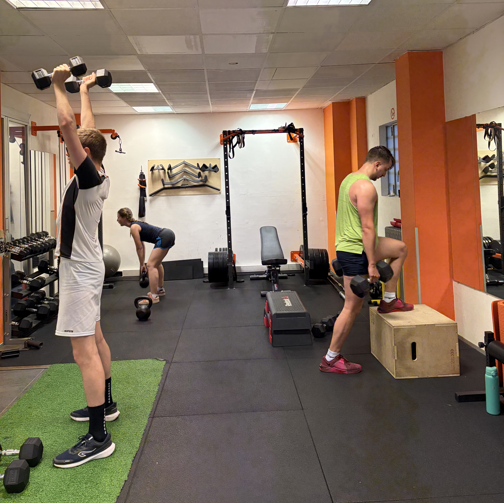

Smettila di allenarti
a caso.
Sono Mattia Carlisi, Chinesiologo clinico a Torino. Non sono un personal trainer con una certificazione: sono un laureato magistrale in Scienze Motorie (LM-67) che valuta il tuo corpo, capisce cosa ti frena davvero e costruisce un programma preciso su di te — non una scheda copiata da internet.
Prenota la consulenza gratuita →
Quello che ottieni con un percorso su misura
Non si tratta di allenarsi di più. Si tratta di allenarsi nel modo giusto — partendo da dove sei davvero, con un programma che ha una logica precisa dietro ogni esercizio.
Più forza, più muscolo — in modo progressivo
Un programma di forza efficace non è una lista di esercizi a caso. Parte da come ti muovi, dai tuoi punti deboli e da una progressione pensata per il tuo corpo. Il risultato è guadagno muscolare reale, senza blocchi e senza infortuni evitabili.
Ideale per: chi vuole aumentare la massa, migliorare la forza o trasformare la propria composizione corporea
Dimagrire mantenendo il muscolo
Il dimagrimento funziona quando l'allenamento è costruito per preservare la massa muscolare mentre si riduce il grasso. Non basta "fare cardio". Costruisco percorsi che migliorano la composizione corporea in modo sostenibile — senza schede da tortura.
Ideale per: chi vuole perdere peso in modo duraturo senza perdere il muscolo guadagnato
Migliora le tue performance sportive
Corri, vai in bici, fai sport amatoriale o vuoi semplicemente essere più in forma? Il tuo allenamento deve essere costruito intorno alla tua attività, non generico. Lavoro sulla forza funzionale, sulla mobilità e sulla prevenzione dei sovraccarichi tipici del tuo sport.
Ideale per: sportivi amatoriali che vogliono migliorare le performance o ridurre gli infortuni ricorrenti
Allenarti anche con dolori o vecchi infortuni
Mal di schiena, ginocchio che fa i capricci, spalla che non va — non sono motivi per non allenarsi. Sono motivi per allenarsi con qualcuno che sa cosa fa. Identifico cosa puoi fare in sicurezza e costruisco il percorso intorno alla tua situazione reale, in sinergia con il tuo medico se necessario.
Ideale per: chi ha dolori cronici, vecchi infortuni o ha paura di farsi male allenandosi
Hai già provato. Non hai ottenuto quello che cercavi.
Hai fatto palestra da solo, hai seguito schede prese online, magari hai anche lavorato con qualcuno — ma i risultati non sono arrivati come ti aspettavi. O sono arrivati e poi sono svaniti. O ti sei fatto male.
Il problema quasi sempre non è la motivazione. È che il programma non era costruito per te — per il tuo corpo, la tua storia, i tuoi limiti reali e i tuoi obiettivi specifici. Una scheda generica porta risultati generici.
Parto sempre da una valutazione reale. Solo dopo so cosa ti serve, perché ti serve e come strutturarlo. Ogni esercizio ha un motivo. Ogni progressione ha una logica.
Inizia il tuo percorso — è gratuito
Come funziona il percorso
Nessun pacchetto preconfezionato. Nessuna scheda standard. Si parte sempre da te.
Consulenza telefonica gratuita
Una telefonata senza impegno per capire la tua situazione: gli obiettivi, cosa hai già provato, eventuali dolori o limitazioni. Serve a valutare come posso aiutarti concretamente e se siamo adatti a lavorare insieme.
Valutazione del movimento e della postura
La prima sessione in studio è dedicata a capire come ti muovi davvero. Analizzo postura, mobilità, forza e storia clinica. Da questa valutazione emerge il tuo punto di partenza reale — non quello che pensi di avere, ma quello che hai effettivamente.
Programma preciso, che si aggiorna sempre
Costruisco un programma con una logica precisa dietro ogni scelta. A ogni seduta valuto come stai rispondendo e aggiusto ciò che non funziona — subito, non aspettando la "verifica mensile". Il percorso evolve con te, settimana dopo settimana.
Cosa posso fare per te
Ogni percorso parte da una valutazione reale. Nessun pacchetto preconfezionato — solo soluzioni costruite su di te.
Valutazione posturale e funzionale
Analizzo come ti muovi, la tua postura e la tua storia clinica per capire esattamente cosa sta causando i tuoi dolori, limitazioni o blocchi ai risultati. Non si inizia ad allenarsi senza sapere da dove si parte — questa valutazione è il fondamento di qualsiasi percorso.
Ideale per: chi ha dolori cronici, rigidità, postura scorretta o non capisce perché non progredisce
Allenamento personalizzato in studio
Sessioni one-to-one in studio, guidate e monitorate. Lavoriamo insieme sugli obiettivi definiti nella valutazione iniziale. Il programma si evolve in base ai tuoi progressi reali — non su un calendario prestabilito, ma su come stai effettivamente rispondendo.
Ideale per: chi vuole risultati seri e vuole un esperto a fianco in ogni sessione
Recupero da infortuni e dolori cronici
Percorsi specifici per chi si sta riprendendo da un infortunio, un intervento chirurgico o convive con dolori muscoloscheletrici. Lavoro in sinergia con il tuo medico o fisioterapista per garantire progressi sicuri, senza rischiare ricadute.
Ideale per: chi ha subito operazioni, infortuni o soffre di mal di schiena, ginocchia, spalle o anche
Coaching online
Tutta la competenza di uno specialista, senza doverti spostare. Valutazione iniziale in video call, programma dettagliato con istruzioni chiare e video, monitoraggio mensile dei progressi e supporto via chat quando ne hai bisogno.
Ideale per: chi non può venire in studio o preferisce allenarsi da casa o in palestra in autonomia
Cosa dicono i miei clienti
"Le schede di allenamento personalizzate di Mattia hanno trasformato il mio approccio, portandomi a risultati che pensavo fossero irraggiungibili."
"Allenamenti su misura, semplici e motivanti. Ho ritrovato energia e ho raggiunto il peso forma in poche settimane."
"Mattia è un ottimo motivatore. Grazie alla sua guida attenta sono riuscita a perdere peso e a sentirmi davvero bene."
"Grazie alla professionalità di Mattia, non ho più mal di schiena cronico e riesco ad allenarmi senza limitazioni."
"L'allenamento di coppia è stimolante e ci tiene motivati. Finalmente un programma che funziona davvero."
"Dopo aver seguito gli esercizi consigliati da Mattia, ho finalmente trovato sollievo dal mio persistente mal di schiena."
Seguimi su Instagram
Casi reali, riflessioni sul movimento e spunti su allenamento e benessere.


Domande frequenti
Tutto quello che vuoi sapere prima di contattarmi
Cosa fa un chinesiologo che un personal trainer normale non può fare?
Il chinesiologo clinico è un laureato magistrale in Scienze dell'Educazione Motoria (LM-67), formato per lavorare anche con persone con patologie, dolori cronici o fragilità fisica. Un personal trainer standard ha una certificazione — non una laurea magistrale. Il chinesiologo valuta il movimento in modo clinico, collabora con medici e fisioterapisti e costruisce programmi basati su evidenze scientifiche, non su schemi generici.
Come funziona la prima consulenza?
La prima consulenza è una telefonata gratuita e senza impegno. Serve a capire la tua situazione, i tuoi obiettivi e cosa hai già provato. Se decidiamo di iniziare, il passo successivo è una valutazione approfondita in studio: analisi del movimento, della postura e della storia clinica. Da questa nasce il tuo programma personale.
Posso allenarmi anche se ho dolori o un vecchio infortunio?
Sì, ed è esattamente il tipo di situazione in cui un chinesiologo fa la differenza. Valuto la tua condizione, capisco cosa può essere allenato e come, e costruisco un percorso sicuro — lavorando in sinergia con il tuo medico o fisioterapista se necessario. Non devi aspettare di stare bene per iniziare a muoverti.
Fai anche coaching online?
Sì. Il coaching online include valutazione iniziale in video call, programma personalizzato con istruzioni dettagliate, monitoraggio mensile dei progressi e supporto diretto via chat. È ideale per chi non può venire in studio o preferisce allenarsi da casa o in palestra in autonomia.
Quante sedute a settimana sono necessarie?
Dipende dagli obiettivi e dalla tua disponibilità reale. In media, 2-3 sedute settimanali sono sufficienti per ottenere risultati concreti. Il programma viene costruito tenendo conto del tuo stile di vita — non di uno ideale che non puoi sostenere nel tempo.
Quanto tempo ci vuole per vedere i primi risultati?
I primi cambiamenti — più energia, meno dolori, movimenti più fluidi — si percepiscono spesso già nelle prime 3-4 settimane. I risultati visibili in termini di forza, composizione corporea e performance richiedono in media 8-12 settimane di lavoro costante. I tempi variano in base al punto di partenza e alla frequenza.
Segui anche chi vuole perdere peso o aumentare la massa muscolare?
Sì. Lavoro su obiettivi di composizione corporea (dimagrimento, aumento di massa), forza, mobilità e performance. L'approccio è sempre lo stesso: valutazione reale, programma su misura, aggiustamenti continui in base ai tuoi progressi.
In cosa è diverso il tuo metodo da una scheda di allenamento standard?
Una scheda standard parte da un template generico. Il mio percorso parte da te: analisi del tuo movimento, della tua storia, delle tue abitudini e dei tuoi limiti reali. Ogni esercizio ha un motivo preciso. E il programma si aggiorna a ogni seduta in base a come stai rispondendo — non ogni mese su un calendario fisso, ma subito, quando serve.